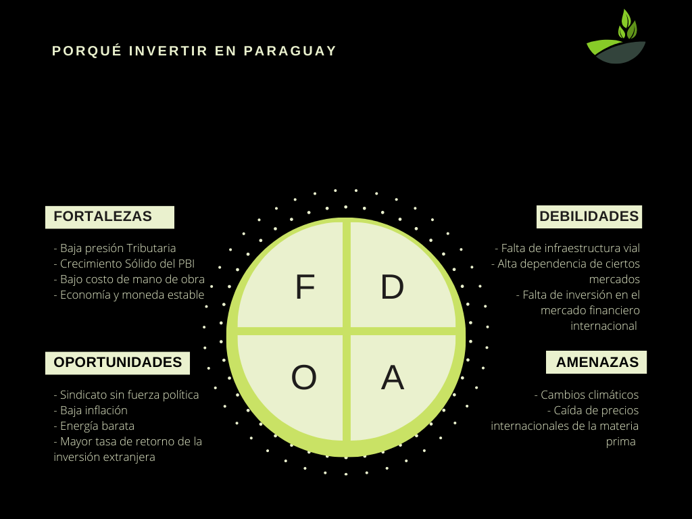

Somos un grupo empresario argentino con más de 30 años de experiencia en la producción agropecuaria.Operamos en más de 30.000 hectáreas en Argentina, ofreciendo productos de alta calidad. A partir de 2022, hemos expandido nuestras operaciones en la región, centrándonos en Paraguay para obtener una mayor rentabilidad de la inversión.

+
1500
Ya somos mas de 1500 personas
+
300
ha
tenemos mas de 300ha compradas
El proyecto se enfoca en la adquisición de campos en Paraguay destinados principalmente a la siembra de Soja, Maíz y Trigo. Esta es una oportunidad única para invertir en un activo de alta calidad, con exposición a un sector atractivo y una economía en crecimiento.
La inversión mínima es de usd 3000, con una rentabilidad del 15% en dólares en 12 meses
Gracias a nuestra trayectoria y crecimiento constante, tenemos la capacidad de compartir nuestra experiencia en el rubro agropecuario. Buscamos generar una transferencia de conocimientos a inversores de todos los tamaños que buscan un crecimiento sostenido a largo plazo. Ahora ofrecemos la oportunidad de realizar planes a medida en el sector agropecuario en Paraguay.
Circular Agro es una estructura nueva, flexible, dinámica, que busca ser un destino para la recepción de inversiones de distintos tamaños, y que a través de ésta, se canalicen en el largo plazo las expectativas de crecimiento que tiene el mercado agropecuario Paraguayo.